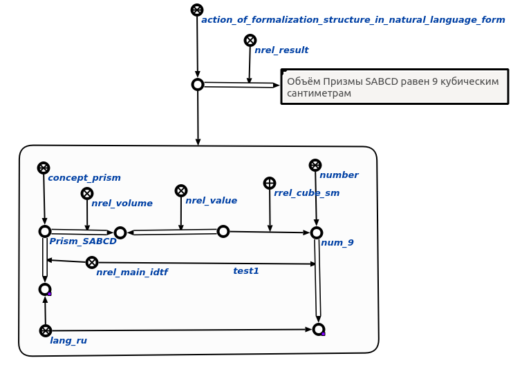

Команда формализации заданной структуры в естественно-языковой форме
предназначена для формализации заданной структуры в естественно-языковой форме. Единственным входным аргументом команды является структура, которую необходимо формализовать в ествественно-языковой форме. Результат выполнения команды показан ниже :
